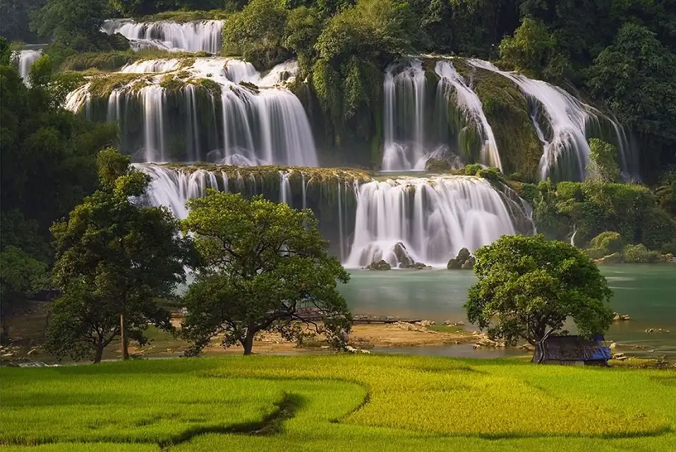
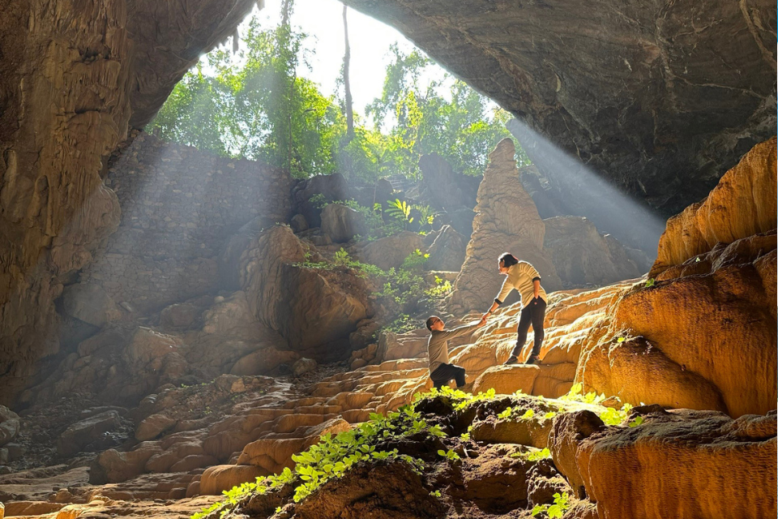
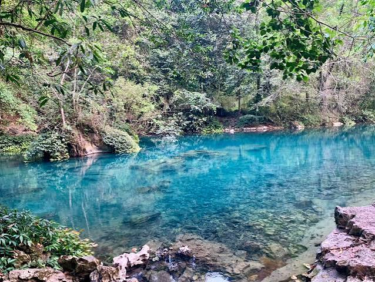
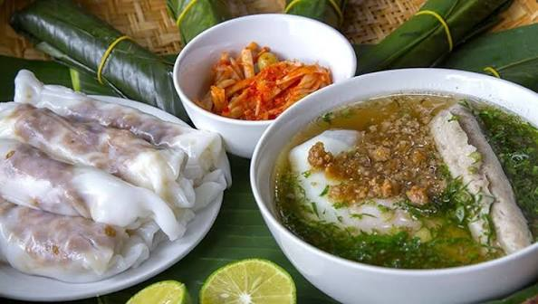
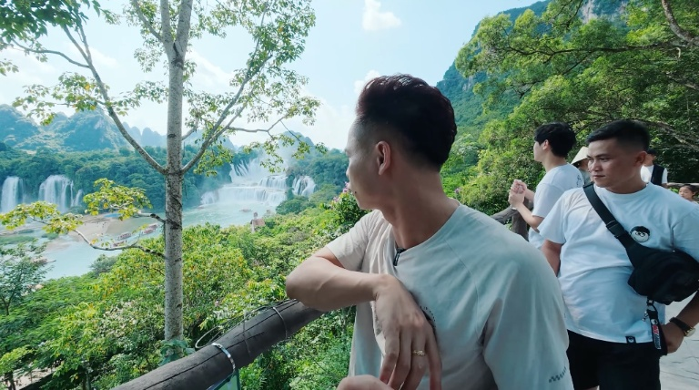

Thác Bản Giốc
Một trong những thác nước xuyên biên giới lớn và đẹp nhất thế giới. Ngọn thác đổ xuống dải nước trắng xóa giữa đại ngàn xanh biếc.
Vẻ đẹp non nước hữu tình nơi địa đầu Tổ quốc
Cao Bằng là một tỉnh miền núi thuộc vùng Đông Bắc Việt Nam, nổi tiếng với danh lam thắng cảnh thiên nhiên hoang sơ, hùng vĩ cùng bề dày lịch sử lâu đời. Nơi đây sở hữu Công viên địa chất toàn cầu UNESCO Non nước Cao Bằng, hấp dẫn du khách bởi hàng loạt ngọn núi đá vôi tuyệt đẹp, hệ thống sông suối trong xanh và các hang động kỳ thú.

Một trong những thác nước xuyên biên giới lớn và đẹp nhất thế giới. Ngọn thác đổ xuống dải nước trắng xóa giữa đại ngàn xanh biếc.

Hang động thạch nhũ kỳ vĩ hàng triệu năm tuổi với nhiều hình thù độc đáo sống động được mệnh danh là kiệt tác của thiên nhiên.
Quần thể 36 hồ nước ngọt tự nhiên nằm trên núi cao, sở hữu làn nước xanh trong như ngọc bích quanh năm.

Di tích lịch sử cách mạng quốc gia đặc biệt với dòng suối Lê-nin xanh ngắt và núi Các Mác hùng vĩ.
Ngọn núi độc đáo có một hang thủng hình tròn đường kính hơn 50m xuyên qua lòng núi, nằm giữa thung lũng cỏ xanh rờn kỳ vĩ.
Ngôi chùa đầu tiên được xây dựng tại biên cương phía Bắc, tọa lạc tựa lưng vào núi Phia Nhắm, nhìn toàn cảnh Thác Bản Giốc tuyệt đẹp.

Đến với Cao Bằng, du khách không thể bỏ qua các món ăn đặc sản mang đậm hương vị núi rừng:
Hình ảnh chuyến đi thực tế trải nghiệm không gian núi rừng Cao Bằng:

Hãy để lại thông tin, chúng tôi sẽ liên hệ tư vấn lịch trình du lịch Cao Bằng phù hợp nhất cho bạn!